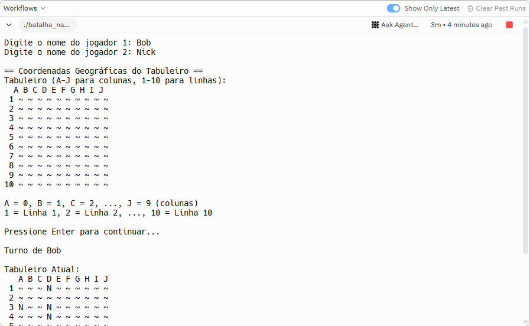
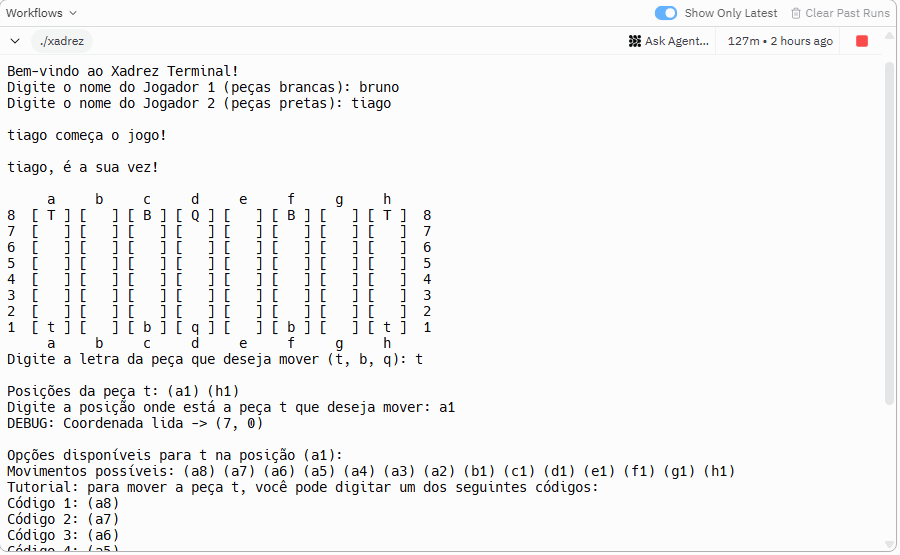
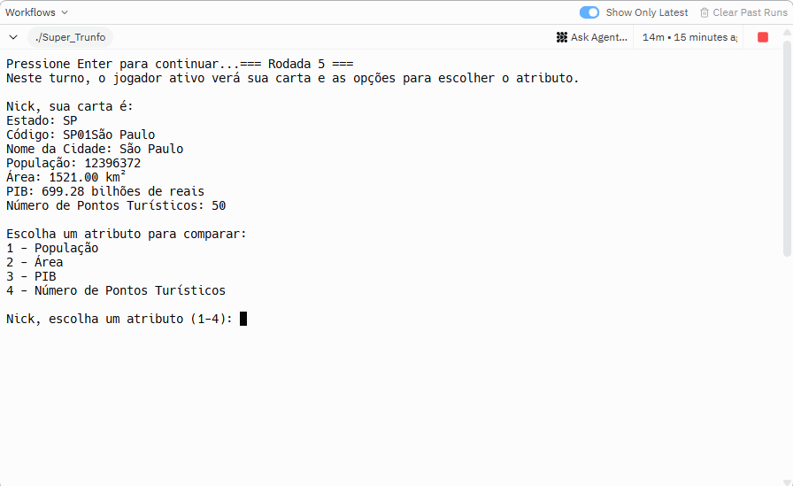

Bem-vindo!
Sou Allan Marques Bastos, um profissional de Tecnologia da Informação com vasta experiência prática, desde a manutenção eletrônica e desenvolvimento até a análise de dados. Atualmente, meu foco é direcionado para Gestão de TI, Infraestrutura, Segurança Cibernética e Investigação Digital, áreas que me permitem aplicar minha paixão por solucionar desafios tecnológicos complexos.
Minha trajetória autodidata, iniciada aos 17 anos, me proporcionou uma base sólida e uma visão crítica, que hoje são complementadas pela formação acadêmica em Gestão da Tecnologia da Informação. Minha motivação central é transformar informações em inteligência acionável, seja para fortalecer a segurança, otimizar infraestruturas, conduzir análises forenses ou auxiliar empresas na tomada de decisões estratégicas e na resposta a incidentes.
Projetos em C
Jogos e algoritmos desenvolvidos em Linguagem C (Lógica e Estrutura de Dados).

Batalha Naval
Jogo clássico de estratégia desenvolvido em C, utilizando matrizes bidimensionais e lógica de posicionamento tático.
Jogar Agora
Xadrez de Terminal
Implementação das regras de xadrez rodando no console, com validação de movimentos e lógica complexa de peças.
Jogar Agora
Super Trunfo
Jogo de cartas baseado em comparação de atributos, utilizando structs e manipulação de dados em C.
Jogar AgoraMinhas Habilidades
Hard Skills (Técnicas)
- S.O: Windows, Linux, macOS, Android
- Infraestrutura de TI & Redes
- Segurança Cibernética & Pentest
- Investigação Digital & Forense
- Dev & Automação (Python, PowerShell, C)
- Manutenção Eletrônica & Hardware
- Análise de Dados (SQL, Python)
Soft Skills (Pessoais)
- Resolução de Problemas Complexos
- Pensamento Crítico e Analítico
- Aprendizado Contínuo & Adaptabilidade
- Comunicação Clara e Efetiva
- Trabalho em Equipe & Liderança
- Ética Profissional & Comprometimento
Formação & Certificações
Graduação em Gestão da Tecnologia da Informação
Instituição: Estácio
Status: Cursando - Previsão de Conclusão: 12/2027
Minhas Certificações
Experiência Profissional
[Seu Cargo Mais Recente ou Principal]
[Nome da Empresa/Cliente ou "Projetos Autônomos"] | [Local]
Período: [Mês/Ano Início] – [Mês/Ano Fim ou "Atual"]
- Realização chave ou responsabilidade 1 que demonstra suas habilidades.
- Realização chave ou responsabilidade 2 focada em resultados.
- Exemplo: "Liderei a reestruturação da infraestrutura de rede, resultando em 20% de aumento na performance."
Técnico em Manutenção Eletrônica e Recuperação de Dados (Autônomo)
Projetos Autônomos | Vila Velha, ES
Período: Desde 2010 – Atual
- Diagnóstico e reparo avançado de dispositivos eletrônicos (smartphones, notebooks).
- Recuperação de dados de HDs, SSDs e outros dispositivos de armazenamento.
- Consultoria e suporte técnico especializado para clientes e pequenas empresas.